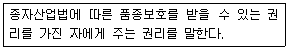

종자기사 (2012-03-04 기출문제)
1과목: 종자생산학
1. 종자의 저장과 관련된 설명 중 틀린 것은?
- 균이 활동하기 위한 저장고의 사대습도의 범위는 65-70%이다.
- 상대습도 40%와 평형을 이루는 수분함량조건에서는 곤충이 발생하기 어렵다.
- 전분종자는 수분을 쉽게 흡수하고 잘 내보내지 않기 때문에 수분함량이 많다.
- 수수종자는 양파종자보다 저장하기 어렵다.
(정답률: 70%)

2. 다음의 품종 중 그 육성방법이 다른 하나는?
- 밀양콩
- 진품콩
- 제초제저항성콩
- 남해콩
(정답률: 96%)
3. 배추과(십자화과) 채소의 채종재배 시 격리거리는?
- 500m이상
- 1km 이상
- 1.5km 이상
- 2km 이상
(정답률: 81%)
4. 신장하는 화분관 속에는 몇 개의 핵이 존재하는가?
- 2개의 영양핵과 1개의 정핵
- 1개의 영양핵과 1개의 정핵
- 2개의 영양핵과 2개의 정핵
- 1개의 영양핵과 2개의 정핵
(정답률: 65%)
5. 반수체가 생성될 수 없는 생식법은?
- apogamy
- 단위생식
- 무핵란생식
- 영양생식
(정답률: 60%)
6. 검사용 종자표본 추출방법 중 설명이 틀린것은?
- 표본추출봉을 사용하여 손이 미치지 않는 깊숙한 곳까지 골고루 추출한다.
- 종자가 수많은 작은 용기에 소량씩 들어있을 때에는 용기에서 다시 종자를 꺼내어 표본을 추출한다.
- 종자를 재분할할 때에는 균분기를 사용한다.
- 재분할 할 때에는 무의식적으로 돌이나 줄기 및 기타 상한 종자나 잡초종자를 제거해서는 안 된다.
(정답률: 68%)
7. 채종 포장의 파종에서 종자의 수확량을 결정하는데 중요하여 반드시 지켜야 할 사항이 아닌 것은?
- 종자 열의 간격유지
- 단위면적당 파종할 종자량
- 파종심도의 균일성
- 포장 심경
(정답률: 75%)
8. 다음 중 옥수수 종자의 수분함량과 건조온도를 바르게 나타낸 것은? ( 단, 젖은 종자의 수분함량 : 25-40%마른 종자의 수분함량 : 25%이하, 고온 : 40℃, 저온 : 35℃ 이다.)
- 젖은 종자는 고온, 마른 종자는 저온에 건조 시킨다.
- 젖은 종자와 마른 종자 모두 고온에 건조 시킨다.
- 젖은 종자와 마른 종자 모두 저온에 건조 시킨다.
- 젖은 종자는 저온, 마른 종자는 고온에 건조 시킨다.
(정답률: 60%)
9. 채종포의 시비방법으로 적절한 것은?
- 질소시비량만 늘린다.
- 질소시비량만 줄인다.
- 질소시비량은 일반포장과 같이 하고, 인산과 칼리를 줄인다.
- 질소시비량은 일반포장과 같이 하고, 인산과 칼리를 늘린다.
(정답률: 81%)
10. 저장된 건조종자는 저장고 내의 대기 중 상대습도가 높아지면 수분을 흡수할 수 있다. 종자의 구성물질 중 수분을 가장 쉽게 흡수하는 성분은?
- 전분
- 단백질
- 지방질
- 무기물
(정답률: 67%)
11. 성숙 종자 중 배유가 배의 무게보다 훨씬 큰 작물로만 짝지어진 것은?
- 참외, 무, 참깨
- 콩, 완두, 녹두
- 밀, 옥수수, 보리
- 벼, 수박, 오이
(정답률: 59%)
12. 다음 발아와 관련된 용어 설명 중 옳은 것은?
- 발아시 : 총 발아수를 총 조사일수로 나눈 수치
- 발아율 : 종자의 대부분(약 80%)이 발아한 비율
- 발아기 : 총발아수를 총 조사일수로 나눈 값
- 발아세 : 치상 후 중간조사일까지 발아한 종자의 비율
(정답률: 78%)
13. 채소종자의 저장조직에 들어있는 지방이 호흡의 기질로 될 때 호흡계수는?
- 1이다.
- 1보다 적다.
- 1-1.5 사이이다.
- 1.5보다 크다.
(정답률: 61%)
14. 종자의 표준발아 검사 시 치상하는 종자수와 반복수는 얼마인가?
- 50립씩 2반복
- 50립씩 3반복
- 100립씩 2반복
- 100립씩 4반복
(정답률: 83%)
15. 벼 종자의 정선과정으로 옳은 것은?
- 대략정선 → 건조 → 정밀정선 → 비중정선 → 소독 → 포장
- 대략정선 → 정밀정선 → 비중정선 → 소독 → 건조 → 포장
- 대략정선 → 소독 → 건조 → 비중정선 → 정밀정선 → 포장
- 애략정선 → 비중정선 → 정밀정선 → 건조 → 소독 → 포장
(정답률: 49%)
16. 표준발아검사에서 정상묘의 범주에 해당되는 것은?
- 경미한 결함묘
- 기본조직이 손상된 묘
- 불균형하게 발육된 묘
- 1차감염의 부패묘
(정답률: 83%)
17. 발아할 때 종자의 양분저장기관이 지하에 남는 것은?
- 강낭콩
- 녹두
- 완두
- 콩
(정답률: 46%)
18. 수정에 대한 설명으로 옳은 것은?
- 한 개의 정핵은 두 번씩 수정하는 중복수정을 한다.
- 정핵(n)은 난세포(n)과 만나 배(2n)을 형성한다.
- 영양핵(n)은 극핵(2n)과 만나 배유(3n)를 형성한다.
- 정핵이 핵분열을 하여 수정하는 경우는 다수의 종자가 형성된다.
(정답률: 83%)
19. 다음 종자 중 물 속에서도 발아가 잘되는 것은?
- 가지
- 멜론
- 상추
- 담배
(정답률: 92%)
20. 아주 미세한 종자를 종자코팅물질과 혼합하여 반죽을 만들고 이를 일정한 크기의 구멍으로 압축하여 원통형 일정크기로 잘라 건조 처리한 종자는 ?
- 테이프종자
- 매트종자
- 피막종자
- 장환종자
(정답률: 78%)
2과목: 식물육종학
21. 체세포분열의 4단계 중 그 기간이 가장 짧은 것은?
- 전기
- 후기
- 종기
- 중기
(정답률: 59%)
22. 이수성에 관한 설명으로 가장 적합한 것은?
- 게놈이 서로 다른 것
- 정상의 염색체세트에 1개 또는 그 이상의 염색체 추가 또는 손실이 있는 것
- ♀,♂의 염색체 수가 서로 다른 것
- 교배조합이 서로 다른 것
(정답률: 47%)
23. 다음 중 유전하는 변이는?
- 일시적 변이
- 교배변이
- 장소 변이
- 환경변이
(정답률: 87%)
24. 1대 잡종 채종시 자가 불화합성을 가장 많이 이용하는 작물은?
- 양파
- 당근
- 옥수수
- 배추
(정답률: 78%)
25. 조합능력을 올바르게 설명한 것은?
- 교배조합에 따른 유전자와 환경의 상호작용
- 교배조합에 따른 f1의 잡종강세를 일으킬 수 있는 정도
- 교배조합에 따른 잡종세대의 유전력의 크기
- 교배조합에 따른 유전분리비
(정답률: 50%)
26. 신품종의 특성을 유지하기 위해서 실시하는 사항 중 옳지 않은 것은?
- 격리재배를 한다.
- 주변 농가에서 먼 곳에 심는다.
- 유사 품종의 기계적 혼입을 막는다.
- 그 작물의 주산지에 다른 품종과 인접하여 심는다.
(정답률: 91%)
27. 꽃가루의 인공적 배양을 하는 가장 중요한 목적은?
- 현재 존재하지 않는 완전히 새로운 작물을 만들기 위하여
- 4배체 식물을 만들어 과실의 크기를 크게 하기 위하여
- 씨없는 과실을 만들기 위해서
- 동형접합율이 높은 계통을 단시일에 얻기 위하여
(정답률: 77%)
28. 식량작물의 종자갱신체계로 맞는 것은?
- 보급종 → 원종 → 원원종 → 기본종
- 기본종 → 원원종 → 원종 → 보급종
- 원종 → 원원종 → 기본종 → 보급종
- 원원종 → 원종 → 보급종 → 기본종
(정답률: 86%)
29. 인위 동질 배수체의 일반적 특성이 아닌 것은?
- 핵과 세포의 증대
- 영양기관의 생육증진
- 감수분열의 이상
- 임성의 증대
(정답률: 60%)
30. 2개의 형질을 지배하는 2개의 유전자좌가 매우 근접해 있을 때 이를 분리하여 재조합형을 얻는데 가장 효과적인 방법은?
- 방사선처리
- 교잡
- 고온처리
- 저온처리
(정답률: 54%)
31. 다음 중 양적형질의 유전과 가장 거리가 먼 것은?
- 2쌍 이상의 유전자가 관여하여 정규곡선과 같은 변이분포를 나타낸다.
- 폴리진이 폴리진계로서 존재하여 변이에 관여한다.
- 주로 수량에 관여하는 형질에 대하여 연속적 변이를 나타낸다.
- 꽃 색깔과 같이 대립변이로 나타난다.
(정답률: 69%)
32. 여교배 육종에서 교배방향에 관하여 설명 중 옳지 않은 것은?
- 반복친을 자방친으로 사용하면 교배의 성공여부를 확인하는데 유리다.
- 반복친을 자방친으로 사용하면 언제든지 교배할 수 있는 이점이 있다.
- 원연품종간 조합의 여교배에서는 f1을 자방친으로 하는 것이 유리하다.
- f1을 자방친으로 하면 자식을 구별하기는 어려우나 임성회복에는 더 유리하다.
(정답률: 52%)
33. 유전자 전환에 의한 형질전환 육종과정이 옳은 것은?
- 플로토플라스트 융합 - 유전자클로닝 - 벡터에 도입 - 식물체 재분화 - 형질전환품종육성
- 플로토플라스트 융합 - 형질전환캘러스선발 - 벡터에 도입 -형질전환품종육성
- 유전자클로닝 - 벡터에 도입 - 형질전환캘러스선발 - 식물체 재분화 -형질전환품종육성
- 유전자클로닝 - 형질전환캘러스선발 -벡터에 도입 - 식물체 재분화 -형질전환품종육성
(정답률: 77%)
34. 기상요인에 의한 재해저항성과 토양요인에 의한 재해저항성을 옳게 표시한 것은?
- 기상요인 - 내냉성, 내염성, 내습성
토양요인 - 내탈립성, 저온발아성, 내산성 - 기상요인- 내풍성, 내냉성, 내서성
토양요인 - 내염성, 내산성, 내습성 - 기상요인 - 내탈립성, 저온발아성, 내도복성
토양요인 - 내서성, 내풍성, 내비성 - 기상요인 - 내비성, 내도복성, 내산성
토양요인 - 내서성, 내음성, 내하고성
(정답률: 83%)
35. 배추, 튤립, 히아신스와 같은 작물에서 인공교배를 하기 위하여 개화기를 조절하고자 할 때 가장 효율적으로 이용되는 방법은?
- 단일처리
- 환상박피
- 춘화처리
- 비배법
(정답률: 77%)
36. 다음 중 유전적 변이를 만들 수 있는 생식과정에 해당하는 것은?
- 영양번식
- 감수분열
- 무성생식
- 아포믹시스
(정답률: 63%)
37. 다음 교배(AABB x AAbb)에 의해 F2세대에서 AABB를 선발할 확률은? (단, 두 유전자는 완전우열성이다.)
- 계통육종과 반수체육종 모두 1/9이다.
- 계통육종과 반수체육종 모두 1/4이다.
- 계통육종에서는 1/4이고, 반수체육종에서는 1/2이다.
- 계통육종에서는 1/9이고, 반수체육종에서는 1/4이다
(정답률: 75%)
38. 배우자에 의한 불화합성에서 S1S1(♀) x S1S2(♂)를 교배하여 얻을 수 있는 개체의 유전자형은?
- S1S2 x S2S3
- S1S1 x S1S3
- S1S3
- S1S2
(정답률: 65%)
39. 육종 기술에 있어서 가장 적합하지 않은 것은?
- 방황변이의 수집 육성
- 유전적 변이의 탐구와 창성
- 변이의 선택과 고정
- 신종의 증식과 보급
(정답률: 75%)
40. AABB x aabb 교잡에서 F2세대의 표현형은 몇 개인가? (단, A와 B는 a와 b에 대하여 각각 완전 우성이고, 서로 독립적이다.)
- 9
- 4
- 2
- 3
(정답률: 67%)
3과목: 재배원론
41. 화학적 생리적으로 염기성 배료에 속하는 것은?
- (NH4)2SO4
- 용성인비
- CO(NH2)2
- K2SO4
(정답률: 75%)
42. 감자의 위축병을 매개하는 해충은?
- 선충
- 진딧물
- 명나방
- 응애류
(정답률: 42%)
43. 파이토크롬의 설명으로 틀린 것은?
- 광흡수색소로서 일장효과에 관여한다.
- Pr은 호광성종자의 발아를 억제한다.
- 파이토크롬은 적색광과 근적외광을 가역적으로 흡수할 수 있다.
- 굴광현상을 자타내는 호르몬의 일종으로 식물 생육에 필수적인 물질이다.
(정답률: 65%)
44. 버널리제이션에 대한 설명으로 옳은 것은?
- 추파성 정도가 높은 식물일수록 장기 저온처리를 해야 효과가 있다.
- 버널리제이션에 감응하는 부위는 잎이다.
- 버널리제이션에 산소의 공급은 필요하지 않다.
- 최아한 봄밀을 1-2℃에서 저온처리 했을 때 개화촉진 효과가 나타나는 것을 말한다.
(정답률: 46%)
45. 목초의 하고 원인에 대한 설명으로 옮은 것은?
- 한지형 목초는 고온에서 생육이 왕성하여 하고현상이 덜하다.
- 한지형 목초는 요수량이 작아 건조에 견디는 힘이 적어서 하고가 심하다.
- 월동목초는 대부분 장일식물이며 초여름의 장일조건에 의해서 생식생장이 촉진되어 하고현상을 조장한다.
- 고온다습한 상태는 병충해의 발생이 억제되어 하고현상이 덜하다.
(정답률: 60%)
46. 관리가 편리하고 통풍, 통광이 양호하나 결과수가 적어지는 결점이 있는 정지법은?
- 원추형
- 변칙주간형
- 배상형
- 울타리형
(정답률: 47%)
47. 논의 담수관개 효과로 거리가 먼 것은?
- 온도의 조절 작용
- 풍식의 방지와 재식밀도 조절
- 생리적으로 필요한 수분의 공급
- 유해물질의 제거와 잡초발생의 억제
(정답률: 56%)
48. 종자가 발아력을 보유하고 있는 기간을 종자의 수명이라 한다. 다음 중 벼, 보리, 밀이 속하는 것은?
- 단명종자
- 상명종자
- 장명종자
- 영명종자
(정답률: 66%)
49. 토양이 과습할 때 생성되는 황화수소에 의한 호흡억제 과정을 무엇이라 하는가?
- 전자전달과정
- 해당과정
- Acetyl CoA
- TCA회로
(정답률: 49%)
50. 인공상토의 구성재료에 대한 설명으로 틀린 것은?
- 펄라이트나 버미큘라이트는 중성-약알칼리성으로 pH에 미치는 영향이 적다.
- 코코피트는 코코넛 야자열매의 껍질섬유를 가공한 것이다.
- 펄라이트는 양이온교환용량이 작고 완충능력이 낮다.
- 피트모스는 중성이며 pH에 미치는 영향이 적다.
(정답률: 46%)
51. 기체성 식물호르몬인 것은?
- 사이토키닌
- 옥신
- 지베렐린
- 에틸렌
(정답률: 62%)
52. 작물의 내동성 증대요인이 아닌 것은?
- 원형질 단백질에 -SH(thiol)기가 많아야 한다.
- 지유함량이 높아야 한다.
- 당분함량이 높아야 한다.
- 전분함량이 높아야 한다.
(정답률: 67%)
53. 작물의 내적 균형 지표로 활용할 수 없는 것은?
- C/N율
- T/R율
- G-D균형
- GDD
(정답률: 60%)
54. 담수표면직파에서 종자에 과산화석회를 분의하여 파종하는 가장 큰 목적은?
- 종자에 산소공급
- 종자의 무게증대
- 조류의 피해방지
- 종자에 보온효과
(정답률: 75%)
55. 식물체의 정아우세현상을 발현하는 식물호르몬은?
- 옥신
- 지베렐린
- 사이토키닌
- 엡시스산
(정답률: 65%)
56. 두류에서 도복의 위험이 가장 큰 시기는?
- 개화기로부터 약 10일간
- 개화기로부터 약 20일간
- 개화기로부터 약 30일간
- 개화기로부터 약 40일간
(정답률: 73%)
57. 벼의 여러 가지 기상 생태형 중에서 저위도 지대에 분포하는 품종의 생태형은?
- 기본 영양생장성과 감온성이 작고 감광성이 큰 감광형
- 기본 영양생장성과 감광성이 작고 감온성이 큰 감온형
- 감온성과 감광성이 작고 기본영양생장성이 큰 기본영양생장형
- 감광성이 작고 감온성과 기본영양생장성이 큰 감온·기본 영양생장형
(정답률: 65%)
58. 벼 도정시 정곡환산율은 중량과 용량으로 각각 몇 %인가?
- 42%, 80%
- 52%, 70%
- 62%, 60%
- 72%, 50%
(정답률: 59%)
59. 학자와 관련 업적이 서로 잘못 짝지어진 것은?
- Liebig - 무기영양설
- J. De Vries - 돌연변이설
- Kogl - GA발견
- J.W. Cornforth -ABA발견
(정답률: 66%)
60. 맥류재배에서 바람에 의한 도복방지책으로 가장 알맞은 것은?
- 배토
- 지주
- 결속
- 복토
(정답률: 48%)
4과목: 식물보호학
61. 음성 주광성을 지닌 곤충은?
- 나비
- 바퀴
- 파리
- 나방
(정답률: 64%)
62. 다음 해충 중에서 식물병을 전파하는 매개충이 아닌 것은?
- 애멸구
- 복숭아혹진딧물
- 끝동매미충
- 벼충채벌레
(정답률: 65%)
63. 다음 해충 중 불완전변태 하는 것은?
- 이화명나방
- 콩가루벌레
- 갓노랑비단벌레
- 완두굴파리
(정답률: 51%)
64. 노린재목이 아닌 것은?
- 벼메뚜기
- 벼멸구
- 애멸구
- 끝동매미충
(정답률: 75%)
65. 곤충의 신경계에 대한 설명으로 옳은 것은?
- 유병체는 사회성 곤충이 비사회성 곤충보다 크다.
- 중대뇌는 꼬리신경절과 연결되어 있다.
- 뇌는 6쌍의 분절신경이 융합해 있다.
- 곤충의 신경계에는 뉴런이 없다.
(정답률: 50%)
66. 다음 곤충 중에서 날개가 없는 것은?
- 하루살이목
- 노린재목
- 총채벌레목
- 톡톡이목
(정답률: 81%)
67. 생태계에서 그 지위가 분해자의 역할을 하는 부식성 해충은?
- 송장벌레
- 명주잠자리유충
- 땅강아지
- 개미사돈
(정답률: 62%)
68. 나비목에 대한 설명으로 옳은 것은?
- 성충의 날개가 막으로 덮혀 있다.
- 성충의 큰 턱은 거의 퇴화되어 있다.
- 유충은 대부분 부식성이다.
- 불완전변태를 한다.
(정답률: 60%)
69. 나용을 만들지 않는 것은?
- 딱정벌레목
- 나비목
- 벼룩목
- 벌목
(정답률: 61%)
70. 나머지 셋과 다른 식흔을 보이는 것은?
- 멸구류
- 진딧물류
- 메뚜기류
- 깍지벌레류
(정답률: 64%)
71. 곤충체벽의 구성부위가 아닌 것은?
- 표피층
- 진피층
- 하피층
- 기저막
(정답률: 58%)
72. 밤바구미 방제에 가장 효과가 없는 약제는?
- 펜토에이트분제
- 에톡사졸액상수화제
- 클로티아니딘액상수화제
- 티아클로프리드액상수화제
(정답률: 40%)
73. 해충의 기계적 방제법이 아닌 것은?
- 유살
- 포살
- 차단
- 천적이용
(정답률: 86%)
74. 곤충의 외부형태의 설명으로 옳은 것은?
- 모두 내골격으로 구성된다.
- 몸 전체가 여러 마디로 되어 있다.
- 자루마디는 냄새를 맡는 감각기가 많다.
- 체외기생성 이는 뒷다리가 발달되어 있다.
(정답률: 78%)
75. 곤충이 마지막 유충기를 지나면 번데기가 되는데, 이 현상을 무엇이라 하는가?
- 용화
- 부화
- 우화
- 탈피
(정답률: 58%)
76. 진딧물은 곤충 분류학상 어디에 속하는가?(오류 신고가 접수된 문제입니다. 반드시 정답과 해설을 확인하시기 바랍니다.)
- 노린재목
- 매미목
- 파리목
- 잠자리목
(정답률: 46%)
77. 보균식물의 한 예로써 종자 또는 유묘기에 이미 감염되어 있으나 개화, 결실기에 이르러 자방 속에 침입하여 발명 하는 병해는 ?
- 붉은별무늬병
- 깜부기병
- 화상병
- 도깨비집병
(정답률: 68%)
78. 벼 키다리병에 관한 설명으로 맞는 것은?
- 병원균은 Gibberella zeae이다.
- 육묘기 때는 발생하지 않는다.
- 벼가 웃자라는 것은 Fusaric acid 때문이다.
- 대표적인 종자전염성 병해로 종자소독이 주요한 방제법이다.
(정답률: 57%)
79. 곤충의 분산과 이동에 관계하는 것으로 가장 거리가 먼 것은?
- 환경요인
- 먹이
- 짝찾기
- 휴면
(정답률: 76%)
80. 곤충의 체적증가와 관련이 있는 것은?
- 미모
- 탈피
- 구기
- 경화
(정답률: 72%)
5과목: 종자관련법규
81. 종자산업법 시행규칙에서 정한 보증표시 사항이 아닌 것은? ( 단, 채종단계별 구분을 요하는 원원종 종자이다.)
- 발아율(%)
- 수량(g)
- 이품종별(%)
- 생산년도
(정답률: 44%)
82. K농가의 A농민이 볍씨 종자생산 대행자격을 얻고자 한다면 몇 년 이상 벼농사의 경험이 필요한가?
- 2년
- 3년
- 4년
- 5년
(정답률: 70%)
83. 종자산업법 시행규칙상 품종성능 심사기준에 해당되지 않는 것은?
- 유통의 안정성
- 재배시험지역
- 평가형질
- 평가기준
(정답률: 54%)
84. 종자산업법에서 정한 종자보증서에 기재할 사항으로 맞는 것은?
- 육성자의 성명
- 종자롯트번호
- 종자의 생산지
- 종자의 생산자
(정답률: 60%)
85. 다음 중 종자위원회의 기능으로 맞는 것은?
- 국유품종보호권의 처분에 관한 심의
- 종자산업의 육성, 품종보호권의 보호 및 품종목록제도 등에 관한 농림수산식품부장관의 자문
- 거절사정 결과에 대하여 불복하는 경우의 심판
- 국립종자원의 운영계획·평가에 관한 심의
(정답률: 60%)
86. 공무원의 직무상 육성에 관한 설명으로 맞는 것은?
- 공무원의 직무상 육성에 관하여는 보상 규정이 없다.
- 공무원의 직무상 육성에 관하여는 필요한 사항을 대통령령으로 정한다.
- 공무원의 직무상 육성은 종자산업법이 적용되지 않는다.
- 공무원의 직무상 육성에 관하여는 필요한 사항을 국무총리령으로 정하고 시·도지사에게 신고한다.
(정답률: 63%)
87. 대통령령으로 정하는시설을 갖춘 자는 종자업 등록을 누구에게 하여야 하는가?
- 농림수산식품부장관
- 국립종자원장
- 시·도지사
- 시장·군수
(정답률: 53%)
88. 벼 포장검사 시 18000주의 표본을 조사한 결과 도열병 54주, 키다리병 36주, 깨씨무늬병 36주, 선충심고병 72주가 조사되었다. 이 때 특정병의 비율은?
- 0.2%
- 0.4%
- 0.6%
- 1.1%
(정답률: 52%)
89. 종자산업법과 동법 시행령 및 동법 시행규칙에 의한 "종자관리요강"의 과수 규격묘의 규격기준으로 틀린 것은?
- 사과(이중접목묘) 묘목의 길이: 120cm이상
- 복숭아 묘목의 길이 : 100cm이상
- 감 묘목의 길이 : 80cm이상
- 매실 묘목의 길이 : 80cm이상
(정답률: 58%)
90. 농림수산식품부장관이 품종목록 등재를 취소할 수 있거나 취소해야 할 경우에 해당하지 않는 것은?
- 같은 품종이 둘 이상의 품종명칭으로 중복하여 등재되었을 경우 가장 먼저 등재된 품종의 등재를 취소한다.
- 해당 품종의 재배로 인하여 환경에 위해가 발생하였을 때 등재를 취소할 수 있다.
- 품종의 성능이 품종성능의 심사기준에 미달되었을 때 등재를 취소할 수 있다.
- 거짓으로 품종목록 등재를 받았을 때 등제를 취소한다.
(정답률: 80%)
91. 종자산업법에 의한 국제종자검정기관에 해당되지 않는 것은?
- 국제종자검정협회
- 국제종자검정가협회
- 농림수산식품부장관이 정하여 고시하는 외국의 종자검정기관
- 대통령령이 정하는 국제기구
(정답률: 58%)
92. 종자산업법에서 규정하고 있는 용어의 정의로 틀린것은?
- "작물"이란 농산물, 임산물 또는 수산물의 생산을 위하여 재배되거나 양식되는 모든 식물을 말한다.
- "품종보호권자"란 품종보호권을 가진 자를 말한다.
- "종자업자"란 이 법에 따른 자격을 갖춘 사람으로서 종자업자가 생산하여 판매·수출하거나 수입하려는 종자를 보증하는 사람을 말한다.
- "실시"란 보호품종의 종자를 증식 · 생산 · 조제 · 양도 · 대여 · 수출 또는 수입하거나 양도 또는 대여의 청약( 양도 또는 대여를 위한 전시를 포함한다. 이하 같다)을 하는 행위를 말한다.
(정답률: 67%)
93. 종자산업법시행규칙상 농림수산식품부령으로 정하는 유통종자의 품질표시 사항으로 맞지 않는 것은?
- 품종의 명칭
- 묘목의 규격묘 표시
- 종자의 무게
- 품종의 내병성
(정답률: 44%)
94. 포장검사 및 종자검사의 검사기준 중 용어의 정의가 틀린 것은?
- 이형주 : 동일품종 내에서 유전적 형질이 그 품종 고유의 특성을 갖지 아니한 개체를 말한다.
- 1차시료 : 소집단의 한부분으로부터 얻어진 적은 양의 시료를 말한다.
- 검사시료 : 검사실에서 제출시료로부터 취한 분할 시료로 품위검사에 제공되는 시료이다.
- 분할시료 : 검정기관에 제출된 시료를 말하며 최소한 관련 요령에서 정한 양 이상이어야 하며 합성시료의 전량 또는 합성시료의 분할 시료이어야 한다.
(정답률: 51%)
95. 종자산업법상 [보기]와 같이 정의된 권리는?

- 품종성능권
- 품종실시권
- 품종보호권
- 품종보증권
(정답률: 76%)
96. 다음중 종자업자에 대한 행정처분의 세부기준으로 틀린 것은?
- 위반행위가 둘 이상이 경우로서 그에 해당하는 각각의 처분기준이 다른 경우에는 그 중 무거운 처분기준에 따른다.
- 위반행위의 횟수에 따른 행정처분의 기준은 최근 2년간 같은 위반행위로 행정처분을 받은 경우에 적용한다.
- 처분권자는 위반행위에 대한 처분기준이 자격정지인 경우 그 위반행위의 동기, 내용, 횟수 및 위반의 정도 등을 고려하여 처분기준의 3분의 1의 범위에서 감경할 수 있다.
- 관련 조항에 따른 보호품종의 실시 여부 보고 등의 명령에 따르지 아니한 경우 1회 위반시 영업정지 7일이다.
(정답률: 59%)
97. 밀 1품종은 국가품종목록의 등제 유효기간 연장신청을, 벼2품종, 보리 3품종은 국가품종목록에 신규 등재하고자 신청서를 제출하였다. 이 때 수수료는 모두 얼마인가?
- 5만원
- 7만 5천원
- 19만원
- 21만원
(정답률: 38%)
98. 국가품종목록에 등재한 품종은 당해 품종이 등재된 사실을 품종보호공보에 게재하여 공고하여 한다, 이 경우 공고하는 내용이 아닌 것은?
- 품종이 속하는 작물의 학명 및 일반명
- 품종보호 출원에 관한 세부사항
- 품종의 성능 및 시험성적
- 품종육성과정의 설명
(정답률: 29%)
99. 종자의 발아 보증시한이 경과된 종자를 판매 또는 보급한자의 과태료 기준은?
- 500만원 이하
- 200만원 이하
- 100만원 이하
- 50만원 이하
(정답률: 34%)
100. 종자산업법에 따라 양도의 경우에도 신규성을 갖춘 것으로 보는 경우에 해당되지 않는 것은?
- 도용한 품종의 종자를 양도한 경우
- 품종보호를 받을 수 있는 권리를 이전하기 위하여 해당품종의 종자를 양도한 경우
- 종자를 증식하기 위하여 해당 품종의 종자를 양도하여 그 종자를 증식하게 한 후 그 종자를 이용을 목적으로 재양도한 경우
- 품종 평가를 위한 포장시험, 품질검사 또는 소규모 가공시험을 하기 위하여 그 품종의 수확물을 양도한 경우
(정답률: 46%)
수수종자가 양파종자보다 저장하기 어렵다는 이유는 수수종자가 빠르게 수분을 잃어버리기 때문입니다. 따라서 수수종자를 저장할 때는 습도와 온도를 적절하게 조절하여 수분이 너무 많이 증발하지 않도록 해야 합니다.